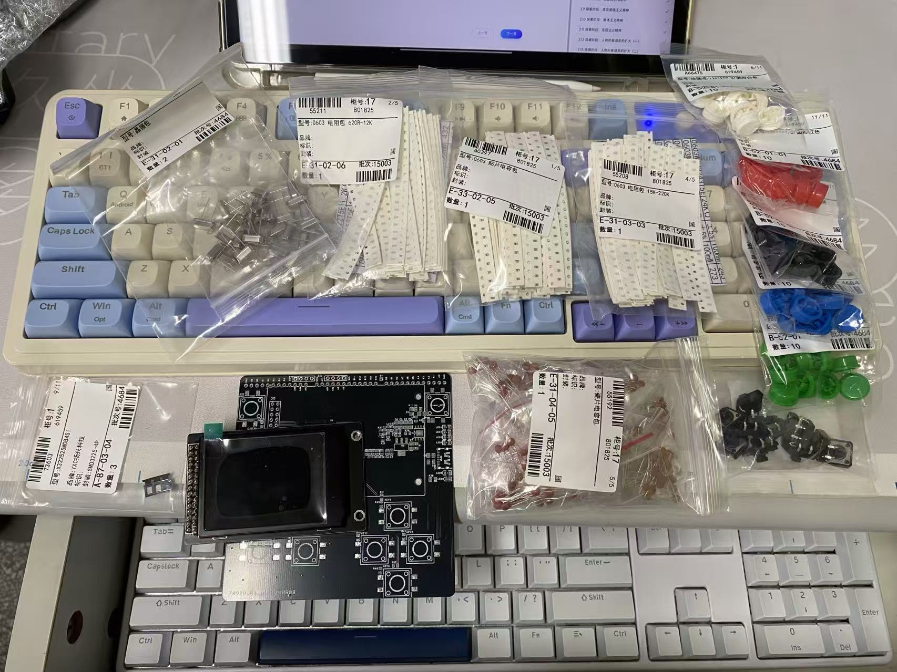

STM32 小游戏机集成控制板
原理图设计 · PCB 绘制 · BOM 与焊接 · 上电排障 · 板级联调

PCB 焊接完成后，屏幕正常显示游戏画面，按键可用于交互控制
本项目是我第一次将 STM32 单片机最小系统、电源供电、显示屏接口和按键输入集成到同一块 PCB 上的板级硬件项目。项目完成了原理图设计、PCB 绘制、BOM 准备、焊接调试、上电排障和基础外设联调，最终实现板载供电稳定、程序正常运行、屏幕显示游戏画面以及按键交互控制。
本项目主要展示 PCB 集成设计、焊接调试和板级验证过程，代码暂未单独公开项目亮点
| 内容 | 体现能力 |
|---|---|
| STM32 最小系统集成 | 理解 MCU 供电、复位、时钟、下载接口等基础电路 |
| 电源模块集成 | 具备板载供电、电源入口、稳压和去耦设计意识 |
| 显示屏接口设计 | 能够完成 LCD/OLED 与 MCU 的硬件连接和显示验证 |
| 按键输入电路 | 掌握 GPIO 输入、按键布局和人机交互硬件设计 |
| PCB 布局布线 | 具备从原理图到 PCB 打样的完整流程经验 |
| 焊接与上电排障 | 具备短路检查、电压测试、逐级上电的调试意识 |
| 板级外设联调 | 能够完成显示、按键、电源和程序运行的整体验证 |
我的主要工作
本项目是我从单片机模块化实验走向 PCB 集成设计的第一个完整板级项目。我主要完成了硬件方案设计、原理图绘制、PCB 布局布线、BOM 器件准备、焊接检查、上电排障和基础外设联调。项目重点不是单纯运行一个小游戏，而是验证我能够把 MCU、电源、显示屏和按键输入集成到一块可运行的 PCB 上。
- 设计 STM32 单片机最小系统，包括供电、复位、时钟和下载调试相关电路
- 将电源供电模块集成到 PCB 上，实现板载供电和基础电源分配
- 设计显示屏接口，用于连接小尺寸 LCD/OLED 屏幕并完成显示验证
- 设计按键输入区域，用于游戏控制和基础人机交互
- 完成 PCB 布局布线，重点关注电源走线、GND 覆铜和关键信号连接
- 根据原理图和 PCB 生成 BOM，完成元件采购、分类和焊接准备
- 焊接完成后使用万用表检查短路、虚焊和关键电源节点
- 按照"先电源、再时钟、再下载、最后外设"的顺序完成上电排障
- 最终实现程序正常运行、屏幕显示游戏画面、按键可进行交互控制
实物展示

BOM 与硬件准备：PCB、显示屏、按键、电阻电容等器件，展示从打样到焊接调试前的硬件实现过程
系统组成
关键难点
1. MCU 最小系统与电源集成
这个项目的核心目标是把原本分散的 STM32 最小系统、电源供电、显示屏和按键输入集成到同一块 PCB 上。相比直接使用开发板，自己画板需要考虑 MCU 供电、复位、时钟、下载接口、电源入口和去耦电容布局。
我在设计中将电源输入、稳压电路和 MCU 供电网络统一规划，在每个关键电源引脚附近放置去耦电容，并预留下载调试接口，保证板子能够稳定上电和烧录程序。最终上电后 MCU 能够正常运行，程序可以下载，屏幕和按键可以进行基础联调。
2. PCB 电源与去耦布局
板级硬件设计中，电源稳定性直接影响 MCU 启动、屏幕显示和按键输入的可靠性。如果去耦电容距离电源引脚过远，或者电源走线过细，可能导致上电不稳定、屏幕异常或程序运行不可靠。
因此我在 PCB 布局时重点关注电源入口、电源走线宽度、GND 覆铜和去耦电容摆放位置。每个 MCU VDD 引脚附近放置 100nF 去耦电容，电源入口放置较大容量滤波电容，并尽量缩短电源回路路径。焊接完成后先测量电源节点，确认无短路和电压正常，再进行程序下载和外设测试。
3. 显示屏与按键外设联调
小游戏机控制板需要同时完成显示输出和按键输入。显示屏用于显示游戏画面，按键用于控制角色移动或菜单操作，因此硬件连接、GPIO 配置和程序逻辑都需要配合。
我在调试时先验证屏幕供电和接口连接，再下载测试程序确认屏幕能够正常显示；随后逐个测试按键输入，确认按键按下后 MCU 能够读取到正确电平。最终实现屏幕显示游戏画面，并通过按键进行交互控制。
4. 焊接检查与上电排障流程
自制 PCB 最容易遇到的问题不是代码错误，而是焊接虚焊、短路、电源异常或器件方向错误。因此我没有直接上电运行程序，而是按照分级排查流程进行调试。
调试顺序为：先目测检查焊点和器件方向，再用万用表检查电源与 GND 是否短路，然后上电测量关键电压，确认电源正常后再下载程序，最后逐个验证显示屏、按键等外设。通过这种方式可以快速缩小问题范围，避免因为直接上电造成器件损坏。
PCB 设计要点
- MCU 尽量放在板子中心区域，显示屏、按键、电源和下载接口围绕 MCU 布局
- 电源走线适当加宽，降低压降和电源回路阻抗
- 每个 MCU VDD 引脚附近放置 100nF 去耦电容，电源入口放置较大容量滤波电容
- GND 进行覆铜处理，降低地阻抗并提高抗干扰能力
- 按键区域按照实际操作习惯布局，方便游戏控制
- 下载接口、复位按键和关键测试点尽量放在方便调试的位置
- 显示屏连接区域尽量减少交叉走线，保证装配和调试方便
调试与验证
本项目通过以下步骤完成板级验证：
- 使用万用表检查电源与 GND 是否短路
- 上电后测量稳压输出和 MCU 供电电压
- 检查 MCU 是否能够正常下载程序
- 下载基础测试程序，验证屏幕显示是否正常
- 逐个读取按键输入，确认 GPIO 状态变化正确
- 运行小游戏程序，验证显示和按键交互是否正常
- 观察长时间运行时是否存在异常复位、过热或显示异常
最终成果
项目复盘
这个项目让我第一次完整经历了从原理图到 PCB 实物运行的过程。相比直接使用开发板，自制控制板需要自己考虑 MCU 最小系统、电源输入、稳压、去耦、按键、显示屏接口和下载调试接口。这个过程让我理解到，电路能画出来不代表板子一定能稳定工作，PCB 布局、电源走线和焊接质量都会直接影响最终运行效果。
在调试过程中，我建立了比较清晰的上电排障流程：先检查短路，再测电源电压，再确认 MCU 能否下载程序，最后逐个验证显示屏和按键外设。这个流程比直接运行完整程序更安全，也更容易定位问题。
这个项目虽然功能不复杂，但它是我从单片机实验走向板级硬件设计的重要一步。它让我掌握了 BOM 准备、PCB 焊接、供电检查和外设联调的基本方法，也为后续更复杂的 STM32 项目和 PCB 项目打下了基础。